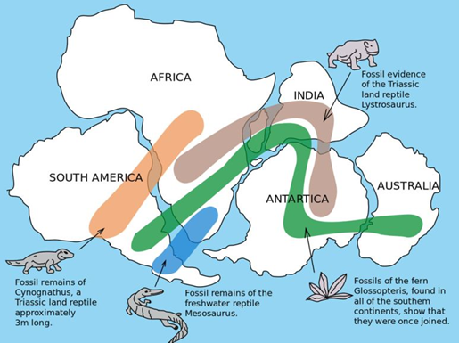
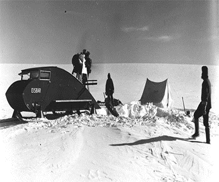

Pangea
The supercontinent that existed 250 million years ago.
Wegner was convinced that all our continents were once connected
creating one enormous supercontinent which he named pangea. Pangea
came from the Greek term that means all earth. Wegner believed that
somehow pangea ripped apart to their current locations and came up
with the idea that the continents were moving. Who would've believed
that the continents started moving? Therefore wegner devoted his whole
career to studying and coming up with proof to support his theory.
Evidence?
In order to support his theory Wegner provided four pieces of
evidence. His first piece of evidence was simply the observation that
the continents appeared to fit together. Wegner found it impossible
for the continents to coincidentally fit together like the pieces of a
puzzle.
Evidence #2
Apart from appearance Wegner dug into books and found evidence of
prehistoric life. One of the prehistoric creatures he focused on was
the mesosaurus. This prehistoric creature only lived in shallow
freshwater and its fossils were only found in two different places in
the world which was the eastern coast of South America and the western
coast of africa.
The mesosaurus couldn't have swam all the way from South America to
Africa due to the distance and the fact that they only live in shallow
freshwater. South America and Africa may have possibly been connected
and after the land masses were torn apart the animals were separated.
Aside from the mesosaurus, Wegner also found other prehistoric
creatures that had similar fossil distributions.

Evidence #3
Wegner dug into books once again and found the matching of similar
rocks from distant locations proving that they were possibly once
together. The mountain ranges in the northeastern United States and
the mountain ranges in northern europe match perfectly with the same
type and age of rock. So it is possible that these mountains were once
connected and as the continents moved it tore them apart.
Evidence #4
Lastly wegner looked at evidence of cold and warm weather in different
parts of the world. Wegner looked into glaciers which are obviously
found in cold parts of the earth. Something interesting about glaciers
is that when they move they leave behind scratches which are called
glacial striations. In the rainforest of South America and Africa
scientists found glacial striations but how can there be glaciers in a
tropical rainforest? This suggests that these continents were possibly
near the south pole where it's cold enough to have glaciers.
Later in Wegners life he took an expedition to the north pole in
search for more evidence to support his theory of continental drift
unfortunately he passed away during this expedition. Due to his
passing Wegner was never able to explain his theory further and
scientists rejected his theory since he wasn't able to explain what
force was driving the motion of the continents.

Today the causes of continental drift are perfectly explained by the
plate tectonic theory. The earth's outer shell is composed of plates
that move a little bit every year.